{kind=link}
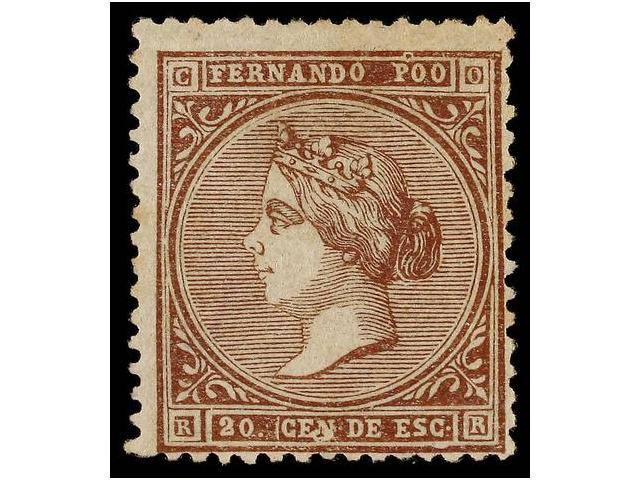

Note: on my website many of the
pictures can not be seen! They are of course present in the
catalogue;
contact me if you want to purchase it.
20 c brown
Value of the stamps |
|||
vc = very common c = common * = not so common ** = uncommon |
*** = very uncommon R = rare RR = very rare RRR = extremely rare |
||
| Value | Unused | Used | Remarks |
| 20 c | RRR | RRR | |
Forgeries are plentyful. Most of the forgeries that I've seen are rather deceptive. Examples of forgeries:
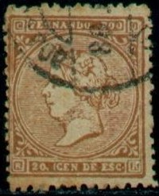
Forgery, design not very well done, lower right ornaments
different (the lower curly part). Part of a printed perforation
on the left hand side?
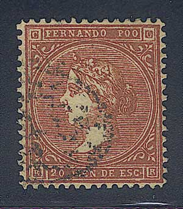
(Forgery)
Other imperforate forgery, possibly made by Segui
Block of Segui forgeries, made around 1910.

Very dubious item, most likely a forgery. At the bottom left of
the central circle, the horizontal background lines are touching
the small circular enclosure. In genuine stamps the horizontal
lines never touch the circle. Although I am not 100% certain,
this might be the characteristics of a Segui forgery.
Three Fournier forgeries as they can be found in 'The Fournier
Album of Philatelic Forgeries', reduced sizes. According to the
Serrane guide the dimensions of the Fournier forgeries are 18 1/4
x 21 1/2 mm, while the genuine stamps measure 18 3/5 x 21 4/5 mm.
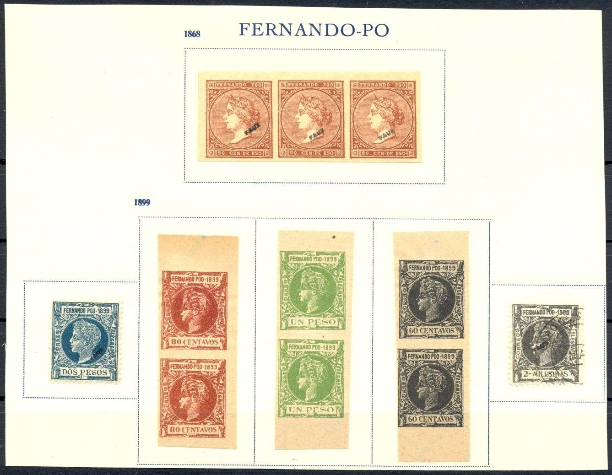

This forgery(?) has inscription "20 CEN DE PESO"
instead of "20 CEN DE ESC".

Imperforate forgery.

A very deceptive forgery made by Sperati.
Value in "C. DE PESETA"
5 c green 10 c red 50 c blue
Value of the stamps |
|||
vc = very common c = common * = not so common ** = uncommon |
*** = very uncommon R = rare RR = very rare RRR = extremely rare |
||
| Value | Unused | Used | Remarks |
| 5 c | R | R | |
| 10 c | R | R | |
| 50 c | R | R | |
Value in "C. DE PESO" (1882)
2 c and 10 c with 'star in dots' and 'lozenge in dots' cancels
1 c green 2 c red 5 c violet 10 c brown (1889)
Value of the stamps |
|||
vc = very common c = common * = not so common ** = uncommon |
*** = very uncommon R = rare RR = very rare RRR = extremely rare |
||
| Value | Unused | Used | Remarks |
| 1 c | *** | *** | |
| 2 c | *** | *** | |
| 5 c | *** | *** | |
| 10 c | *** | *** | |
Surcharged with "HABILITADO PARA CORREOS 50 CENT PTA"
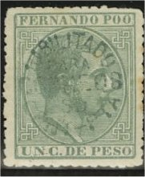
50 c (blue, black or violet) on 1 c green 50 c (blue or black) on 2 c red 50 c (blue, black or violet) on 5 c violet
Value of the stamps |
|||
vc = very common c = common * = not so common ** = uncommon |
*** = very uncommon R = rare RR = very rare RRR = extremely rare |
||
| Value | Unused | Used | Remarks |
| 50 c on 1 c | RR | RR | |
| 50 c on 2 c | *** | *** | |
| 50 c on 5 c | RR | RR | |
A "HABILITADO PARA CORREOS 50 CENT-PTA" overprint on an
envelope (not on a stamp!)
1/8 c grey 2 c red 5 c green 6 c violet 10 c violet 10 c red 10 c brown 12 1/2 c brown 20 c blue 25 c red Overprinted "HABILITADO PARA CORREOS 50 CENT PTA" (1898) (overprinted in several colors) 50 c on 2 c red 50 c on 10 c violet 50 c on 10 c red 50 c on 10 c brown 50 c on 12 1/2 c brown Overprinted "HABILITADO 5 C DE PESO"

5 c (blue) on 2 c red 5 c (blue) on 6 c violet 5 c (blue) on 10 c violet 5 c on 10 c brown 5 c (black or blue) on 12 1/2 c brown 5 c (black or red) on 20 c blue 5 c (black or blue) on 25 c red
Value of the stamps |
|||
vc = very common c = common * = not so common ** = uncommon |
*** = very uncommon R = rare RR = very rare RRR = extremely rare |
||
| Value | Unused | Used | Remarks |
| All values | R to RR | R to RR | |
Overprinted "5 Cen." in a circle
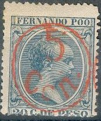
5 c on 1/8 c grey 5 c (blue or black) on 2 c red 5 c (red) on 5 c green 5 c (red or violet) on 6 c violet 5 c on 10 c brown 5 c (red) on 12 1/2 c brown 5 c (red) on 20 c blue 5 c (black or blue) on 25 c red
Value of the stamps |
|||
vc = very common c = common * = not so common ** = uncommon |
*** = very uncommon R = rare RR = very rare RRR = extremely rare |
||
| Value | Unused | Used | Remarks |
| 5 c on 1/8 c | * | * | |
| 5 c on 2 c | ** | ** | |
| 5 c on 5 c | *** | *** | |
| 5 c on 6 c | ** | ** | |
| 5 c on 10 c | R | R | |
| 5 c on 12 1/2 c | *** | *** | |
| 5 c on 20 c | ** | ** | |
| 5 c on 25 c | ** | ** | |
Forged Fournier overprint:
A forged "5 Cen." overprint made by the forger
Fournier. Picture taken from a 'Fournier Album of Philatelic
Forgeries'.
With year "1899"


1 m brown 2 m brown 3 m brown 4 m brown 5 m brown 1 c black 2 c green 3 c brown 4 c yellow 5 c red 6 c blue 8 c brown 10 c orange 15 c olive 20 c brown 40 c violet 60 c black 80 c brown 1 P green 2 P blue
Value of the stamps |
|||
vc = very common c = common * = not so common ** = uncommon |
*** = very uncommon R = rare RR = very rare RRR = extremely rare |
||
| Value | Unused | Used | Remarks |
| 1 m to 15 c | * | * | |
| 20 c | ** | ** | |
| 40 c | *** | *** | |
| 60 c | *** | *** | |
| 80 c | *** | *** | |
| 1 P | R | R | |
| 2 P | R | R | |
Overprinted "HABILITADO PARA CORREOS 50 CENT PTA"

50 c on 4 c yellow (overprinted violet) 50 c on 20 c brown
Value of the stamps |
|||
vc = very common c = common * = not so common ** = uncommon |
*** = very uncommon R = rare RR = very rare RRR = extremely rare |
||
| Value | Unused | Used | Remarks |
| 50 c on 4 c | *** | *** | Also exists with green overprint(?): R |
| 50 c on 20 c | *** | ** | |
Overprinted "HABILITADO 5 C DE PESO"

5 c on 20 c brown
Value of the stamps |
|||
vc = very common c = common * = not so common ** = uncommon |
*** = very uncommon R = rare RR = very rare RRR = extremely rare |
||
| Value | Unused | Used | Remarks |
| 5 c on 20 c | ** | * | |
Overprinted "5 Cen." in a circle 5 c on 20 c brown
Value of the stamps |
|||
vc = very common c = common * = not so common ** = uncommon |
*** = very uncommon R = rare RR = very rare RRR = extremely rare |
||
| Value | Unused | Used | Remarks |
| 5 c on 20 c | *** | * | |
With year "1900"

1 m black 2 m black 3 m black 4 m black 5 m black 1 c green 2 c violet 3 c red 4 c brown 5 c blue 6 c red 8 c brown 10 c red 15 c violet 20 c brown 40 c brown 60 c green 80 c blue 1 P brown 2 P red
Value of the stamps |
|||
vc = very common c = common * = not so common ** = uncommon |
*** = very uncommon R = rare RR = very rare RRR = extremely rare |
||
| Value | Unused | Used | Remarks |
| 1 m to 80 c | * | * | |
| 1 P | *** | *** | |
| 2 P | *** | *** | |
Overprinted "HABILITADO PARA CORREOS 50 CENT PTA"

50 c on 20 c brown
Value of the stamps |
|||
vc = very common c = common * = not so common ** = uncommon |
*** = very uncommon R = rare RR = very rare RRR = extremely rare |
||
| Value | Unused | Used | Remarks |
| 50 c on 20 c | ** | *** | |
With year "1901"

1 c black 2 c yellow 3 c violet 4 c violet 5 c red 10 c brown 25 c blue 50 c red 75 c brown 1 p green 2 p brown 3 p green 4 p red 5 p green 10 p yellow
Value of the stamps |
|||
vc = very common c = common * = not so common ** = uncommon |
*** = very uncommon R = rare RR = very rare RRR = extremely rare |
||
| Value | Unused | Used | Remarks |
| 1 c to 2 P | ** | ** | |
| 3 P to 10 P | *** | *** | |
With year "1902"
5 c green 10 c blue 25 c red 50 c brown 75 c violet 1 p red 2 p green 5 p red
Value of the stamps |
|||
vc = very common c = common * = not so common ** = uncommon |
*** = very uncommon R = rare RR = very rare RRR = extremely rare |
||
| Value | Unused | Used | Remarks |
| 5 c to 75 c | * | * | |
| 1 P and 2 P | ** | ** | |
| 5 P | *** | *** | |
With year "1903"

1/4 c violet 1/2 c brown 1 c red 2 c green 3 c green 4 c violet 5 c red 10 c orange 15 c green 25 c brown 50 c brown 75 c red 1 p brown 2 p green 3 p green 4 p blue 5 p blue 10 p red
Value of the stamps |
|||
vc = very common c = common * = not so common ** = uncommon |
*** = very uncommon R = rare RR = very rare RRR = extremely rare |
||
| Value | Unused | Used | Remarks |
| 1/4 c to 25 c | * | * | |
| 50 c to 1 P | ** | ** | |
| 2 P to 5 P | *** | *** | |
| 10 P | R | R | |
With year "1905" at the right side

1 c violet 2 c black 3 c red 4 c green 5 c green 10 c violet 15 c red 25 c orange 50 c green 75 c brown 1 p brown 2 p red 3 p brown 4 p green 5 p red 10 p blue
Value of the stamps |
|||
vc = very common c = common * = not so common ** = uncommon |
*** = very uncommon R = rare RR = very rare RRR = extremely rare |
||
| Value | Unused | Used | Remarks |
| 1 c to 5 c | c | c | |
| 10 c to 75 c | * | * | |
| 1 P | ** | ** | |
| 2 P to 10 P | *** | *** | |
Stamps in a similar design were issued for the Elobey, Annobon and and Corisco; Fernando Poo; Philippines; Puerto Rico; Spanish Guinea and Rio de Oro.
Forgeries exist, example:
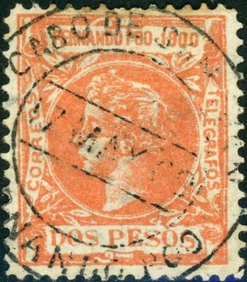


(Fournier 1st choice forgeries)
The above forgery was made by Fournier, here with "SANTA ISABEL 21 APR 99 FERNANDO POO" cancel, another cancel also exists: "CABO DE SAN JUAN 17 MAY 00 FERNANDO POO" (see second image). He has made two types of forgeries of the 1899 issue (4 values; 60 c to 2 P) and 1 type of the 1900 issue (5 values with millesimas, 1 to 5 m and 4 values with centavos 2 to 8 c). He distinguished between first choice forgeries and second choice forgeries. The second choice forgeries are relatively crude. I posess a 80 c 1899 1st choice Fournier forgery with no cancel, but with a 'FAUX' overprint; this forgery was distributed with the 'Fournier Album'.
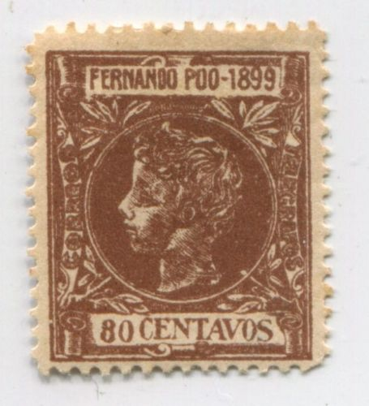
Second choice Fournier forgery
Another page from a Fournier Album.


I've been told that these are 'Geneva forgeries'; they were
probably made by Fournier as well.
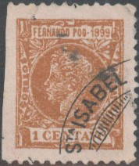


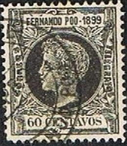


1 c blue 2 c red 3 c violet 4 c black 5 c yellow 10 c brown 15 c green 25 c brown 50 c green 75 c red 1 p blue 2 p brown 3 p red 4 p grey 5 p brown 10 p brown
Value of the stamps |
|||
vc = very common c = common * = not so common ** = uncommon |
*** = very uncommon R = rare RR = very rare RRR = extremely rare |
||
| Value | Unused | Used | Remarks |
| 1 c to 15 c | c | c | |
| 25 c | *** | ** | |
| 50 c | c | * | |
| 75 c to 2 P | * | * | |
| 3 P to 5 P | ** | ** | |
| 10 P | *** | *** | |
Overprinted "HABILITADO PARA 05 CTMS" in blue or black

5 c on 10 c brown
Value of the stamps |
|||
vc = very common c = common * = not so common ** = uncommon |
*** = very uncommon R = rare RR = very rare RRR = extremely rare |
||
| Value | Unused | Used | Remarks |
| 5 c on 10 c | * | * | Blue overprint: ** |
5 c red (view with pillars) 10 c green (King in ellipse) 15 c blue (design as 1 c) 20 c lilac (design as 2 c) 25 c red (design as 1 c) 30 c brown (design as 5 c) 40 c blue (design as 10 c) 50 c orange (design as 2 c) 1 P black (design as 5 c) 4 P red (design as 10 c) 10 P brown (design as 10 c)
Value of the stamps |
|||
vc = very common c = common * = not so common ** = uncommon |
*** = very uncommon R = rare RR = very rare RRR = extremely rare |
||
| Value | Unused | Used | Remarks |
| 5 c to 5- c | c | c | |
| 1 P | * | * | |
| 4 P | ** | ** | |
| 10 P | *** | *** | |
(Fiscal stamps, reduced sizes)
Overprinted for postal use (value: all R to RRR):
(Reduced size)

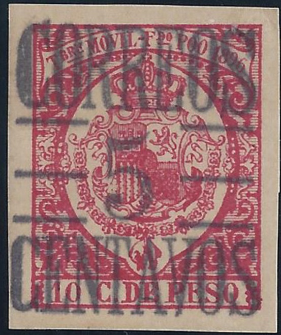
Looks like a forgery to me, the "F" of "F DO"
has the central stroke too high, the design is a bit blur and the
overprint is smaller and in a different lettering type.
The "CORREOS" overprint was also forged, example of such a forgery:

Also, some two fiscal stamps were overprinted with "HABLITADO -- PARA -- CORREOS" or "HABILITADO PARA CORREO 15 C --- DE PESO ---", example:

{kind=link}
{kind=link}
{kind=link}
{kind=link}
{kind=link}